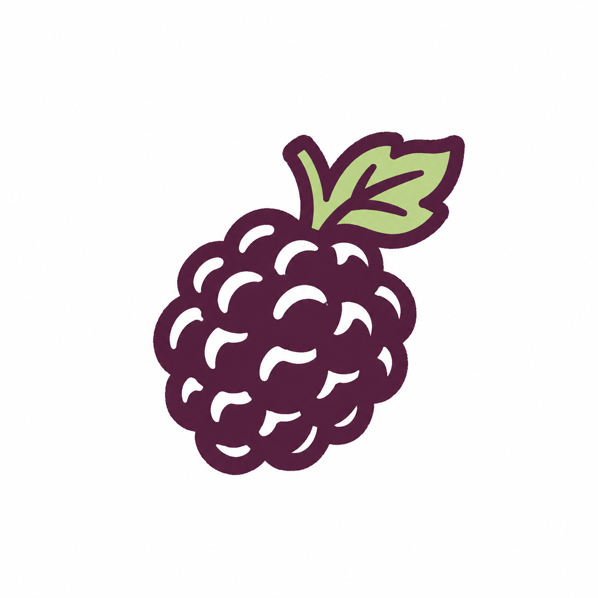
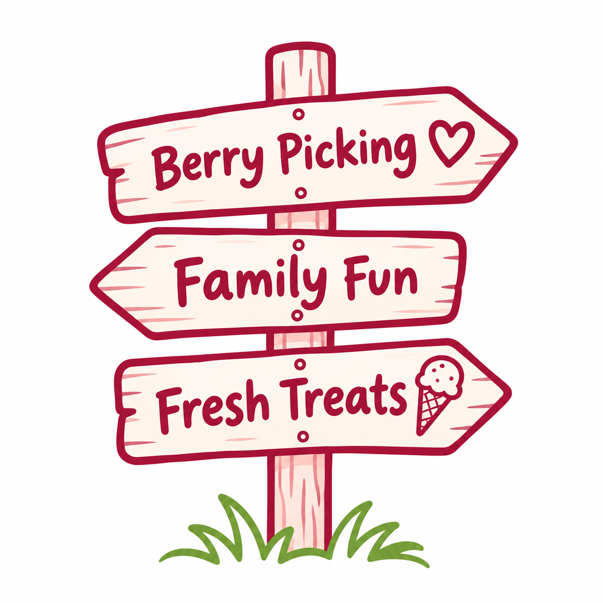

Family moments at the farm
From picking fresh fruit to enjoying a treat together, Fairfield Berries is a place to savour the little things.
Our farm →
Seasonal fruit, farm experiences and delicious real fruit ice cream.
Berry availability changes throughout the year — see what the farm has to offer.
From farm-fresh fruit to a favourite summer treat.



From picking fresh fruit to enjoying a treat together, Fairfield Berries is a place to savour the little things.
Our farm →Fresh seasonal goodness
Browse what the farm grows and discover the fruit of the season.
Seasonal varieties and online ordering options to be confirmed.


Find out what's growing, explore the farm and treat yourself to something delicious.
Address, hours and current picking options to be confirmed.